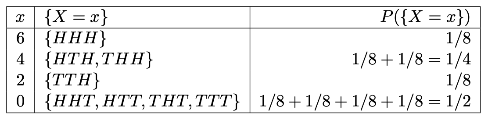
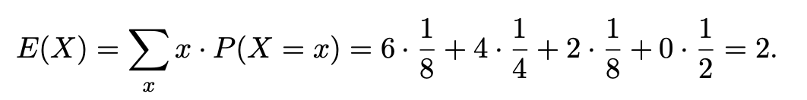
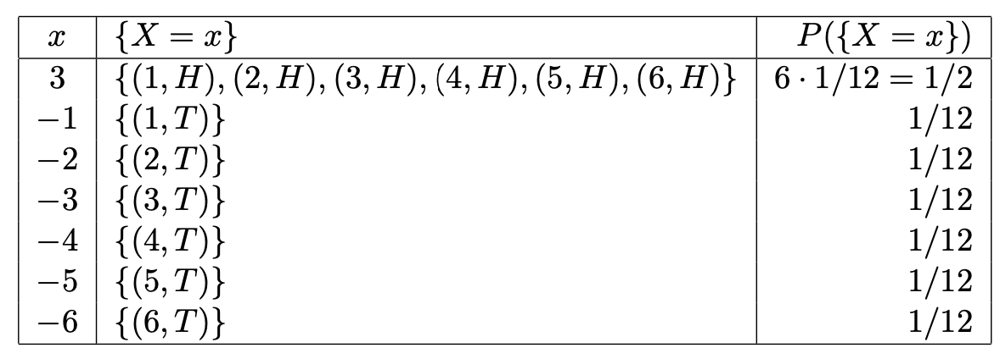
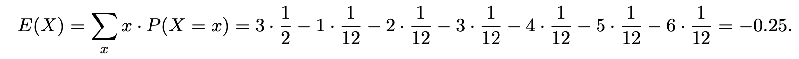

A developer of a popular mobile app (available for Android, iPhone, and Windows
Phone) knows that 65% of the users have an iPhone and 20% of the users have an
Android phone. A user can pay 1 euro to get rid of annoying ads. The developer knows
from previous experience that the probabilities that Android, iPhone, and Windows
Phone users will pay the additional fee to get rid of ads are 10%, 60% and 20% respec-
tively.
- Compute the probability that two randomly chosen users both have a Windows
phone.
- We first need to find the probability P(Windows) that a randomly selected user has a Windows phone.
Note that P(Windows) = 1 − P(Android) − P(iPhone) = 1 − 0.2 − 0.65 = 0.15.
Since the app is popular, we follow the small sample rule, i.e., we treat selections as independent events.
Therefore, by the multiplication rule for independent events we get:
P(two randomly selected users have a Windows phone) = P(Windows) * P(Windows) = 0.15 * 0.15 = 0.0225
- Compute the probability that a randomly chosen user paid the additional fee.
- Using the law of total probability we get:
P(fee) =
= P(fee|Android) * P(Android) + P(fee|iPhone) * P(iPhone) + P(fee|Windows) * P(Windows)
= 0.1 * 0.2 + 0.6 * 0.65 + 0.2 * 0.15
= 0.02 + 0.39 + 0.03 = 0.44.
- The developer receives 1 euro from a user. What is the probability that this user
has an iPhone? Round the result to three decimal places.
- We are intersted in P(iPhone|fee). By definition of conditional probability:
P(iPhone|fee) = P(iPhone & fee)/P(fee)
Using the multiplication rule in the numerator (and the answer from part b) in the denominator we get:
P(iPhone|fee) = (P(fee|iPhone) * P(iPhone)) / P(fee)
= (0.6 * 0.65) / 0.44
= (approx.) 0.886.
Every employee of a big company received recently a new laptop. All laptops come
with a pre-installed operating system, including, among others, a highly unstable web
browser Verge. It turns out that the probability of Verge crashing at least once while
surfing the Internet equals 0.80. Since Verge has such bad reputation, many users choose
to replace it with a more stable web browser called Marble. Some time after the intro-
duction of the new laptops the IT department of the company surveyed its employees
about the user experience. It turns out that 92% of employees who experienced at
least one crash of Verge installed Marble, and 46% of employees who did not have any
problems with Verge decided to switch to Marble anyway.
- Compute the probability that a randomly chosen employee has Marble installed
on their laptop.
Alice tosses a fair coin three times.
- Give the sample space Ω and probability measure P for this experiment.
- The sample space Ω is {HHH,HHT,HTH,THH,HTT,THT,TTH,TTT}.
All outcomes are equally likely, since the coin is fair, thus P (ω) = 1/8 for all ω in Ω.
- Let A be the event that Heads comes up in the second toss, and B the event that
precisely two Tails come up. Are A and B independent?
- Two events A and B are independent if P(A ∩ B) = P(A) * P(B).
We have A = {HHH,HHT,THH,THT}, so P(A) = 1/2.
Similarly, B = {HTT,THT,TTH}, so P(B) = 3/8.
Finally, A ∩ B = {THT} and P(A ∩ B) = 1/8.
However, P(A) * P(B) = 1/2 * 3/8 = 3/16 =/= 1/8 = P (A ∩ B).
We conclude that A and B are not independent.
Each time Heads comes up, Alice receives 2 euros. If Tails comes up in the first or
second toss, Alice receives nothing, and if Tails comes up in the third toss, Alice loses
everything she earned in the previous tosses.
- Let X be the random variable which denotes the amount Alice earns after three
tosses. Determine all possible values x of X and construct the probability function
p(x) = P(X = x) of X based on the formal definition. (You may present the
results in a table).
- We find what Alice earns for each outcome of the experiment, and get the following table:

- Compute, using part c), the expectation E(X) of X.
- By definition of expectation we get:

Andy first rolls a fair six-sided die, and then tosses a fair coin.
- Give the sample space Ω and probability measure P for this experiment.
- Ω = {(1,H),(2,H),(3,H),(4,H),(5,H),(6,H),(1,T),(2,T),(3,T),(4,T),(5,T),(6,T)}.
Both the die and the coin are fair, so all outcomes are equally likely and P (ω) = 1/12 for all ω in Ω.
- How would the probability measure P change if Andy used a biased coin with the
probability of Tails equal to 0.4?
- The roll and the toss are independent by definition,
so P((i,H)) = 1/6 * P(H) and P((i,T)) = 1/6 * P(T), where i = 1, 2, . . . , 6.
Therefore all six outcomes with Heads have probability 1/6 * 0.6 = 1/10
and all six outcomes with Tails have probability 1/6 * 0.4 = 1/15.
Andy proposes the following game (with a fair six-sided die and a fair coin) to Bridget:
if Heads comes up, Bridget receives 3 euros from Andy, irrespective of the result on the
die. If Tails comes up, Bridget has to pay Andy as many euros as the die shows.
- Let X be the random variable which denotes the amount Bridget earns in one turn
of the game. Determine all possible values x of X and construct the probability
function p(x) = P(X = x) of X based on the formal definition. (You may present
the results in a table).
- We find what Bridget earns for each outcome, and get the following table:

- Compute, using part c), the expectation E(X) of X.
- By definition of expectation we get:
